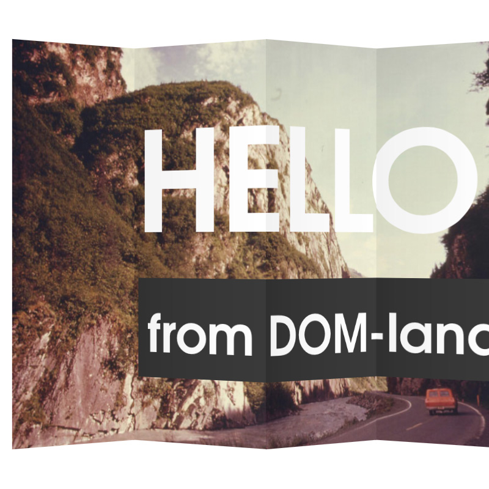

OriDomi
Fold the DOM up like paper.

The web is flat, but with OriDomi you can fold it up. Open-source paper-folding library with animation queueing, touch support, and zero dependencies.
CoffeeScript / JavaScript, CSS3
The web is flat, but with OriDomi you can fold it up. Open-source paper-folding library with animation queueing, touch support, and zero dependencies.


Pozaic uses WebRTC to connect friends (or strangers) in live video compositions you can turn into animated gifs. The medium captures a single second in time across geographic gaps.


Set daily goals and visualize your progress in an intuitive and visual way. Motivate yourself to adopt new positive habits one day at a time.

Transform arrays of any length into cubes that can be rotated infinitely. Originally developed as the time picking interface for ChainCal, I expanded it to visualize arbitrary arrays and wrote an article detailing it on Codrops.


Skew the shapes of elements without distorting their contents. Maskew creates a parallelogram mask over the element and supports touch/mouse manipulation of the skew amount.
Express middleware to add intelligent server-side routing for single page applications.
A naïve human typing effect.
Easy web worker threads without creating separate function files.